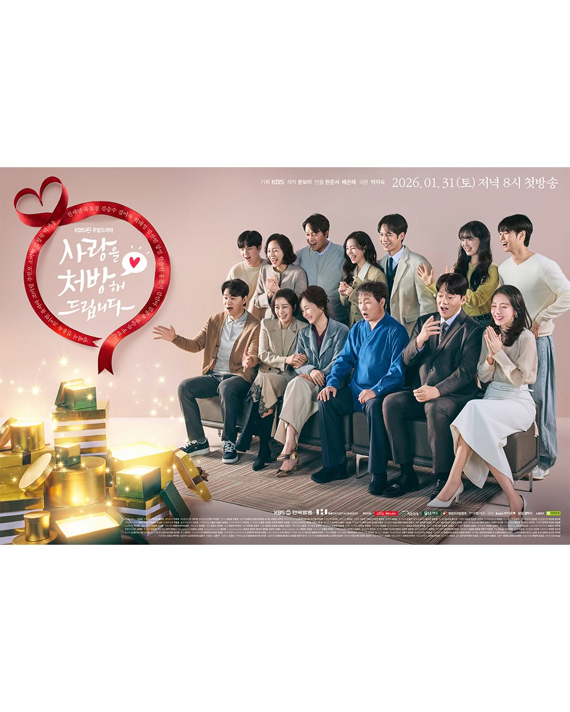

KBS2 bagikan poster terbaru untuk drama harian "Recipe for Love", yang akan tayang bulan ini.
"Recipe for Love" adalah drama rekonsiliasi keluarga tentang dua keluarga yang telah terjerat dalam permusuhan selama 30 tahun. Saat kesalahpahaman diselesaikan dan luka lama mulai sembuh, kedua keluarga secara bertahap bersatu dan terlahir kembali sebagai satu keluarga.

[Recipe for Love]
--
Director: (Park Ji Sook)
ScreenWriter: (Han Joon Seo)
Line Up Cast:
Episodes: 50
Network/Platform: KBS2
Jadwal Perilisan: 31 Januari 2026
Waktu Berjalan: Setiap Sabtu & Minggu
--
Director: (Park Ji Sook)
ScreenWriter: (Han Joon Seo)
Line Up Cast:
- Jin Se Yeon berperan sebagai: (Kong Ju A)
- Park Ki Woong berperan sebagai: (Yang Hyeon Bin)
- Yoo Ho Jung berperan sebagai: (Han Seong Mi) [Ibu Kong Ju]
- So Yi Hyun berperan sebagai: (Cha Se Ri)
- Kim Seung Soo Seung berperan sebagai: (Kong Jung Han)
- Kim Hyung Mook berperan sebagai: (Yang Dong Ik)
Episodes: 50
Network/Platform: KBS2
Jadwal Perilisan: 31 Januari 2026
Waktu Berjalan: Setiap Sabtu & Minggu
~~
Source:
KBS2